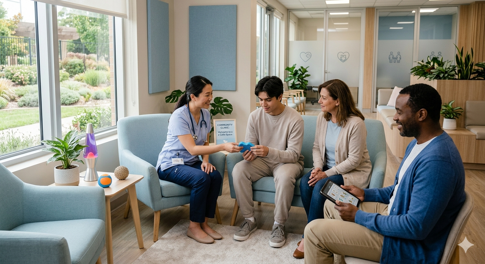
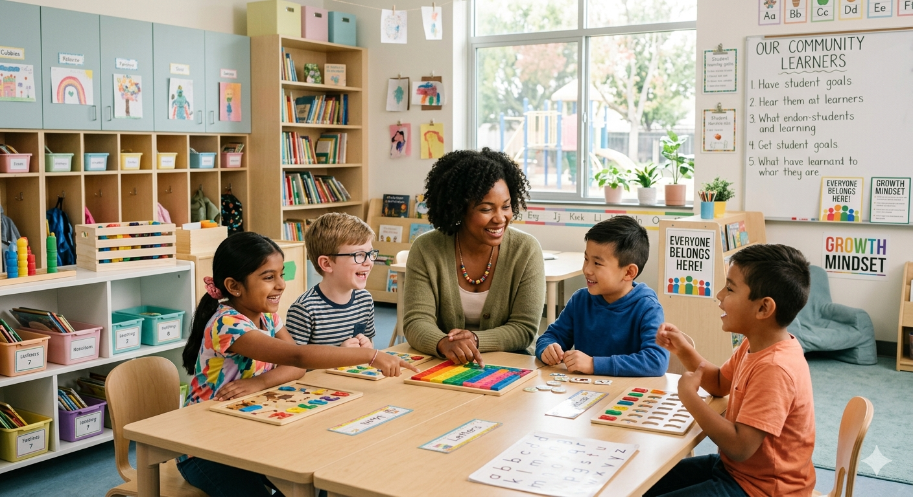

Empresas
RH, liderança e cultura organizacional
Redução de barreiras, treinamento de equipes, retenção de talentos e melhoria da performance operacional.
A Liserth ajuda empresas, clínicas e escolas a adaptar ambientes, pessoas e processos para promover inclusão real, bem-estar e resultados mensuráveis.
Atuamos com uma abordagem prática para transformar ambientes em espaços mais preparados, seguros e funcionais para diferentes perfis neurológicos. Nosso trabalho conecta ciência, comportamento, gestão e adaptação sensorial.
Cada ambiente possui desafios próprios. Por isso, a Liserth estrutura estratégias personalizadas para empresas, clínicas e escolas.
Redução de barreiras, treinamento de equipes, retenção de talentos e melhoria da performance operacional.

Adaptação da jornada do paciente, organização do ambiente e capacitação da equipe de atendimento.

Apoio a educadores, adaptação de rotinas e construção de ambientes mais preparados para alunos neurodivergentes.
A Liserth atua de forma integrada: entende o cenário, identifica barreiras, propõe adaptações e acompanha a evolução.
Levantamento de necessidades, barreiras e oportunidades de melhoria.
Ajustes no ambiente para reduzir sobrecarga e melhorar foco, conforto e desempenho.
Capacitação prática para RH, líderes, educadores e profissionais de atendimento.
Plano personalizado para aplicar neuroinclusão na rotina da organização.
Entendimento do ambiente, equipe, rotina e principais desafios.
Definição das ações prioritárias para cada contexto.
Aplicação das adaptações, treinamentos e ajustes operacionais.
Monitoramento da evolução e refinamento contínuo das ações.
A Liserth une experiência em comportamento, neurodesenvolvimento, inclusão e adaptação funcional para entregar soluções aplicáveis no mundo real.
Ambientes despreparados geram sobrecarga, queda de desempenho, conflitos, evasão e perda de talentos. Ambientes adaptados geram segurança, pertencimento e resultado.
Agende um diagnóstico inicial com a Liserth.